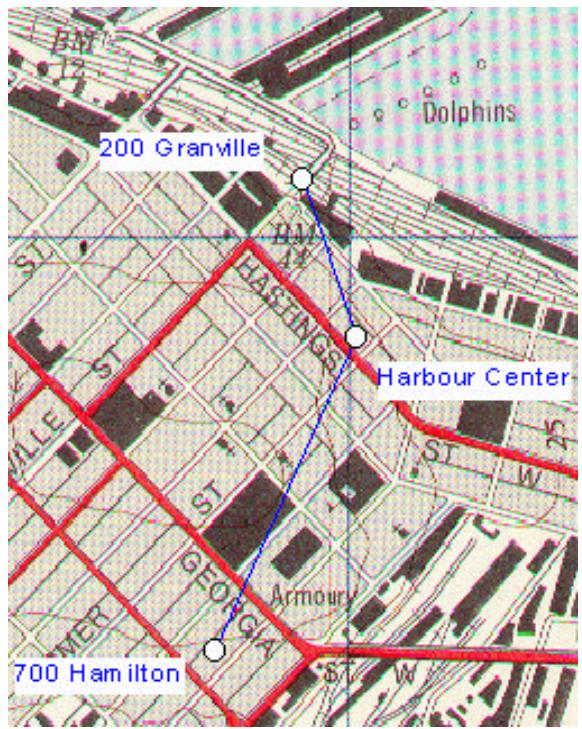
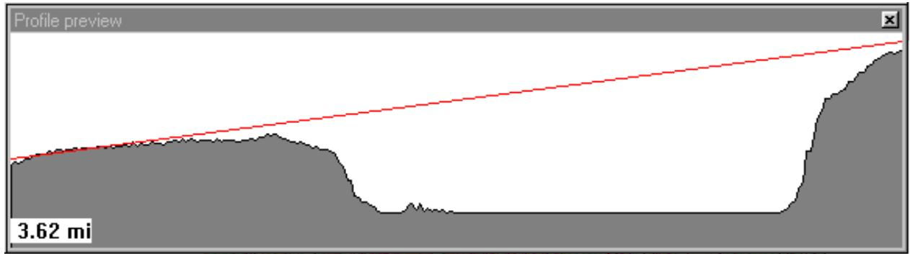
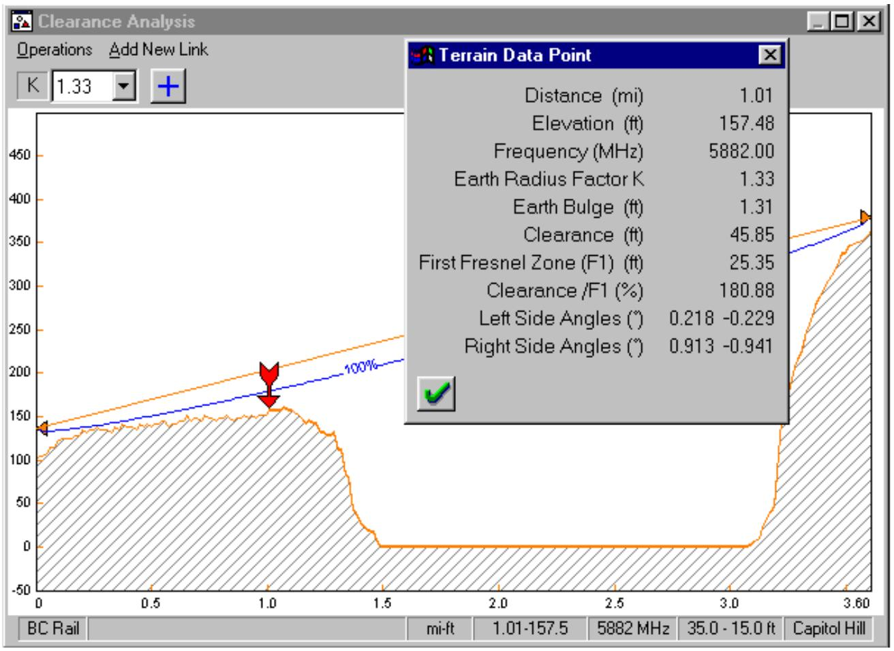
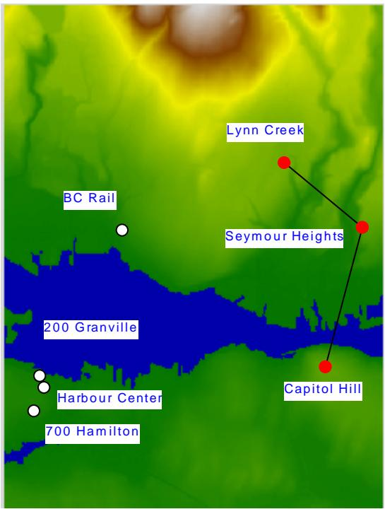
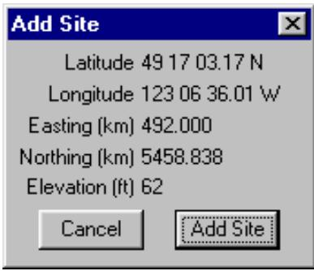
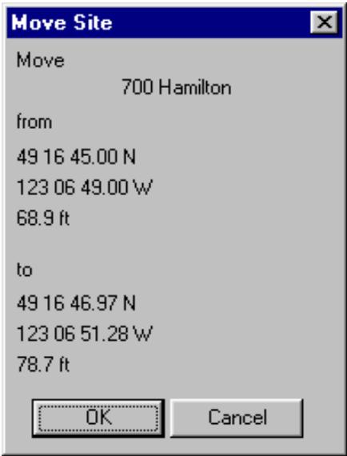
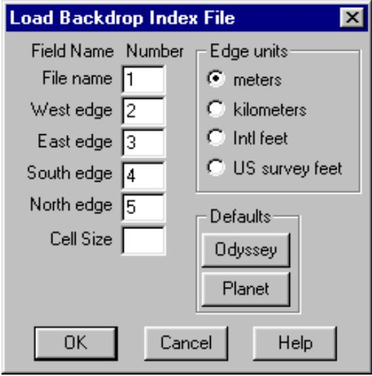
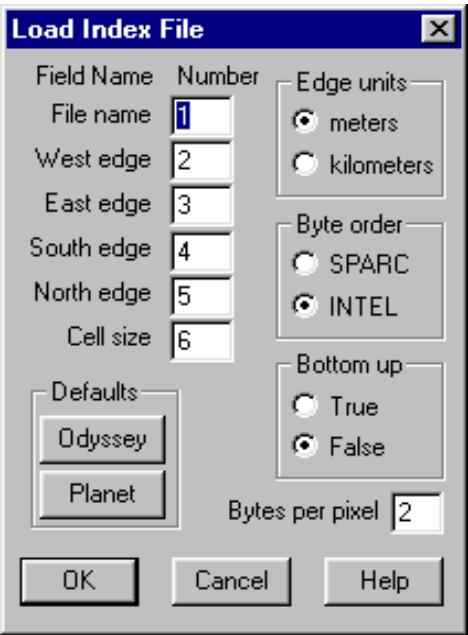
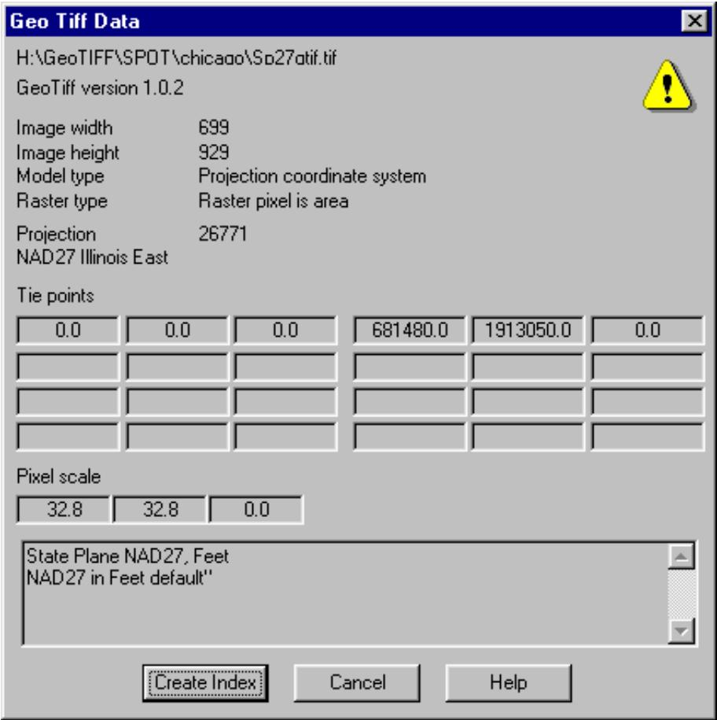

#13 textCác tệp và cấu trúc thư mục cho ví dụ về lưới bản đồ được hiển thị ở bên phải. Sao chép các tệp này vào ổ cứng của bạn và ghi chú lại thư mục vì thư mục này phải được xác định như một phần của quy trình thiết lập.
#14 textCác thư mục được đặt tên là heights và backdrop. Thư mục backdrop chứa một bản đồ địa hình đã được quét và ảnh hàng không ở định dạng tệp TIF. Thư mục heights chứa cơ sở dữ liệu địa hình có cùng phạm vi với bản đồ đã quét. Mỗi thư mục chứa một tệp chỉ mục và một tệp chiếu ở định dạng MSI Planet. Tệp chỉ mục xác định tên tệp và các cạnh của tệp và tệp này sẽ được tải vào chương trình. Tệp chiếu nêu rõ phép chiếu cần thiết.
#15 textCác tệp và thư mục ví dụ về lưới bản đồ
#17 image

#18 textTệp mg_examp.bkd là một tệp dự án lưới bản đồ chứa tất cả các định nghĩa cần thiết cho cả nền và cơ sở dữ liệu địa hình.
#19 textTệp mg_examp.gr4 là một tệp dữ liệu mạng Pathloss có thể được xem trong cả mô-đun mạng và lưới bản đồ.
#20 textPhần đầu tiên của ví dụ sử dụng tệp dự án lưới bản đồ. Phần thứ hai mô tả các bước để tạo tệp dự án lưới bản đồ và các nguồn dữ liệu cũng như các vấn đề về sản xuất.
#21 titleTẢI TỆP DỰ ÁN LƯỚI BẢN ĐỒ
#22 list
Chọn Module - Map Grid để vào mô-đun lưới bản đồ. Nếu có một tệp mạng hiện có hoặc một tệp tạm thời, chọn Files - New để xóa màn hình hiển thị.
Chọn Site data - Backdrop. Sau đó chọn Files - Open trên thanh menu của hộp thoại backdrop. Mở tệp mg_examp.bkd. Tệp này chứa tất cả thông tin cần thiết cho ví dụ; tuy nhiên, sẽ cần
#23 textxác định vị trí của các thư mục backdrop và heights để tương ứng với cấu trúc thư mục máy tính của bạn.
#24 text" Màn hình hiển thị nền được chia thành hai phần - nền và cao độ. Trong phần nền, nhấp vào nút Set directory và xác định thư mục backdrop.
#25 text" Nhấp vào tab Elevation để chuyển sang phần này. Sau đó nhấp vào nút Set directory và xác định thư mục heights.
#26 text" Chọn Files - Save trên thanh menu của hộp thoại backdrop và lưu tệp dự án lưới bản đồ đã sửa đổi với các vị trí thư mục đã được cập nhật.
#27 text" Nhấp vào nút OK. Tệp nền vcr_map.tif sẽ được tải và hiển thị.
#28 text" Một tệp thứ hai (vcrphoto.tif) nằm trong tệp chỉ mục. Để kích hoạt tệp này, chọn Site data - Backdrop - Index và nhấp vào tùy chọn “show”.
#29 titleĐIỀU HƯỚNG HIỂN THỊ LƯỚI BẢN ĐỒ
#30 list
" Ban đầu, toàn bộ tệp sẽ được hiển thị trên màn hình. Nhấp vào nút để đặt tỷ lệ thu phóng thành một pixel vẽ bằng một pixel màn hình. Đây là độ phân giải dễ đọc nhất.
" Nhấp vào nút để di chuyển màn hình hiển thị. Giữ nút chuột trái và di chuyển chuột để di chuyển màn hình hiển thị.
" Để thu phóng màn hình hiển thị theo cài đặt tùy chỉnh, nhấp vào nút. Một cú nhấp chuột trái trên màn hình hiển thị sẽ phóng to màn hình hiển thị một lượng đã cài đặt trước và căn giữa màn hình hiển thị tại điểm đã chọn. Một cú nhấp chuột phải sẽ thu nhỏ màn hình hiển thị.
" Để thu phóng một khu vực cụ thể, di chuyển chuột đến một góc của khu vực, giữ nút chuột trái và kéo chuột đến góc đối diện theo đường chéo.
Để hiển thị toàn bộ bản đồ, nhấp vào nút.
#31 titleTẢI TỆP VÍ DỤ MẠNG
#32 textChọn Files - Open và tải tệp mạng ví dụ mg_examp.gr4. Nhấp vào nút để thu phóng màn hình hiển thị theo phạm vi của các trạm.
#33 textLưu ý rằng mô-đun lưới bản đồ không thay thế mô-đun mạng. Bạn có thể chuyển đổi giữa mô-đun mạng và lưới bản đồ. Về mặt chức năng, hai mô-đun này giống hệt nhau.
#34 textNhấp vào nút để đặt chế độ con trỏ liên kết. Chế độ này được yêu cầu cho các thao tác sau:
#35 texttạo một liên kết giữa hai trạm.
#36 textchọn một mô-đun thiết kế bằng cách nhấp chuột trái vào liên kết giữa hai trạm, chỉnh sửa chú thích trạm, thuộc tính liên kết và tên trạm và di chuyển tên trạm.
#37 textTrong mô-đun mạng, đây là chế độ con trỏ mặc định.
#38 titleKIỂM TRA KHOẢNG HỞ
#39 textCác mặt cắt đường truyền có thể được tạo động trên màn hình. Ví dụ, xác định tính khả thi của một đường truyền giữa các trạm BC Rail và Capitol Hill. Nhấp vào nút. Đặt chuột vào trạm BC Rail. Giữ nút chuột trái và kéo chuột đến trạm Capitol Hill.
#40 chart

#41 textMặt cắt sẽ được hiển thị động trên màn hình cùng với chiều dài đường truyền và một đường thẳng giữa các ăng-ten. Màn hình hiển thị này không bao gồm độ cong trái đất. Nếu bạn nhấp chuột phải bất kỳ lúc nào trong quá trình
#42 textthao tác này, mặt cắt sẽ được đặt lại. Thả nút chuột tại trạm Capitol Hill và một màn hình hiển thị mặt cắt chi tiết sẽ được tạo ra, cho phép phân tích khoảng hở chặt chẽ hơn.
#43 chart

#44 textLiên kết có thể được thêm vào màn hình hiển thị và một tệp dữ liệu Pathloss có thể được tạo tại thời điểm này.
#45 image

#46 titleCHẾ ĐỘ XEM CAO ĐỘ
#47 textMột chế độ xem cao độ có thể được thêm vào màn hình hiển thị.
#48 textChọn Site data - Elevation view - Create. Phạm vi hiển thị luôn là màn hình hiện tại.
#49 textNút bật/tắt chế độ xem cao độ.
#50 textChế độ xem cao độ phủ lên nền bằng cách sử dụng các thao tác raster. Một số tùy chọn cho mã thao tác raster có sẵn. Chọn Site Data - Elevation view - Options. Mã SRCCOPY hiển thị ở bên phải ghi đè hoàn toàn lên nền. Mã DSPDxax là một hiển thị trong suốt, hữu ích với hình ảnh nền thang độ xám 8 bit.
#51 titleTHÊM VÀ DI CHUYỂN CÁC TRẠM
#52 textChọn Site data - Add site hoặc Move site để truy cập các tính năng này.
#53 image

#54 image

#55 textCác vị trí trạm ban đầu và các điều chỉnh tiếp theo có thể được thực hiện bằng các thao tác thêm và di chuyển trạm. Di chuyển một trạm yêu cầu hai bước. Đầu tiên, nhấp vào trạm cần di chuyển. Sau đó, di chuyển trạm đến vị trí mới của nó.
#56 textDi chuyển một trạm không tự động tạo lại các mặt cắt đường truyền cho bất kỳ liên kết nào được kết nối với trạm này.
#57 titleTẠO DỰ ÁN LƯỚI BẢN ĐỒ
#58 textPhần này mô tả cách tạo tệp dự án lưới bản đồ cho ví dụ này.
#59 textChọn Site data - Backdrop và nhấp vào nút reset để xóa dự án hiện tại.
#60 textTrong bản phát hành này, cùng một phép chiếu phải được sử dụng cho cả dữ liệu nền và dữ liệu cao độ. Ngay cả khi không có nền, bạn vẫn phải đặt phép chiếu cho cả hai. Bắt đầu với nền, tiến hành như sau.
#61 textTệp \backdrop\projectn.txt chứa dòng “NAD27 Clarke 1886 zone 10". Đây là các tham số cần thiết cho phép chiếu UTM.
#62 titleCài đặt Nền
#63 list
" Đặt lựa chọn tọa độ lưới thành Universal Transverse Mercator (UTM) và nhập 10 vào trường zone.
" Đặt datum thành North American 27 (NAD27). Việc chuyển đổi tọa độ giữa các datum chưa được triển khai trong mô-đun Map Grid hiện tại; tuy nhiên, cần phải chỉ định một khu vực cho datum. Trong ví dụ này, đặt khu vực thành “Canada (Alberta - British Columbia)”.
#64 textC Nhấp vào nút set directory và xác định thư mục chứa các tệp nền.
#65 image

#66 text" Nhấp vào nút index để mở biểu mẫu chỉ mục. Chọn Files - Import list trên thanh menu. Tệp chỉ mục chứa các dòng sau ở định dạng Planet:
#69 text" Nhấp vào nút Planet để đặt các giá trị mặc định này. Các cạnh là tọa độ UTM của các góc của tệp. Trường cell size là tùy chọn và nên để trống cho ví dụ này.
#70 textNhấp OK, tải tệp chỉ mục và xác minh các mục nhập.
#71 titleCài đặt Cao độ
#72 text" Chuyển sang phần cao độ và đặt dữ liệu chiếu thành các giá trị giống như trong phần nền.
#73 image

#74 text" Nhấp vào nút set directory và xác định thư mục chứa các tệp cao độ.
#75 text" Nhấp vào nút index để mở biểu mẫu chỉ mục. Chọn Files - Import list trên thanh menu. Tệp chỉ mục chứa dòng sau ở định dạng Planet:
#77 text" Nhấp vào nút Planet để đặt các giá trị mặc định này. Các cạnh là tọa độ UTM của các góc của tệp.
#78 text" Tùy chọn bottom up xác định xem tệp sẽ được đọc từ dưới lên hay từ trên xuống. Một lỗi ở đây sẽ dẫn đến hiển thị bị lộn ngược.
#79 text" Tùy chọn byte order nên được đặt thành Intel cho ví dụ này. Nếu cài đặt này không chính xác, các giá trị cao độ sẽ rất lớn và được hiểu là giá trị không có dữ liệu. Tuy nhiên, gần mực nước biển, một số dữ liệu có thể được tạo ra, dẫn đến kết quả rất khó hiểu.
#80 textNhấp OK, tải tệp chỉ mục và xác minh các mục nhập.
#81 textChọn Files - Save trên thanh menu nền và lưu dự án. Lần tiếp theo chương trình Pathloss khởi động, tệp dự án lưới bản đồ sẽ được tự động tải lại.
#82 titleTỆP GEOTIF
#83 image

#84 textTệp GeoTif là các tệp hình ảnh TIF có phần mở rộng để tham chiếu địa lý cho tệp. Mô-đun lưới bản đồ hỗ trợ các tệp GeoTif với phép chiếu tọa độ UTM và US state plane. Thư mục map_grid\Geo_Tiff chứa một ví dụ về tệp GeoTif sử dụng tọa độ US state plane.
#85 textChọn Site data - Backdrop và nhấp vào nút reset để tạo một dự án lưới bản đồ mới. Trong phần nền, nhấp vào nút index.
#86 textChọn Files - Geo Tiff file và tải tệp map_grid\geo_tiff\sp27gtif.tif. Hộp thoại thông tin ở bên phải tóm tắt trạng thái địa lý của tệp.
#87 textNhấp vào nút create index. Tất cả các khía cạnh của định nghĩa nền được điền đầy đủ.
#88 textĐóng chỉ mục và nhấp vào nút OK để hiển thị tệp.
#89 titleNGUỒN DỮ LIỆU NỀN
#90 textTệp vcr_map.tif được tạo ra bằng cách quét một bản đồ địa hình thành nhiều phần và ghép các phần lại với nhau trong một chương trình chỉnh sửa hình ảnh. Một máy quét Hewlett Packard ScanJet 3200C đã được sử dụng. Các cạnh phải được tham chiếu địa lý. Điều này có nghĩa là tọa độ hình chữ nhật của các cạnh phải được biết. Đây là một quy trình tương đối đơn giản nếu bản đồ chứa lưới UTM. Các cạnh của hình ảnh có thể được cắt theo các đường lưới và các giá trị này sẽ được nhập vào chỉ mục.
#91 textĐịnh dạng tệp có thể là tệp hình ảnh được gắn thẻ (TIF) hoặc bitmap Windows (BMP).
#92 textMàu sắc nên được đặt thành bảng màu 8 bit cho cả hình ảnh màu và thang độ xám. Kích thước tệp cơ bản sẽ là một byte trên mỗi pixel. Nếu sử dụng màu 24 bit, kích thước tệp cơ bản sẽ lớn gấp ba lần.